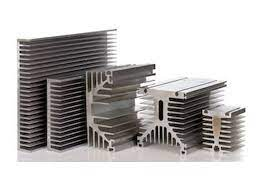

B7- Dissipateur thermique
Dispositif généralement en aluminium et destiné à optimiser l'évacuation de la chaleur.

De nombreux types de dissipateurs thermiques
sont proposés par les constructeurs :
- Dissipateur s'adaptant aux boîtiers ronds des
transistors de petite et moyenne puissance.
- Dissipateurs plats avec des ailettes plus ou moins grandes,
pour le montages des éléments de puissance :
etc
En savoir plus